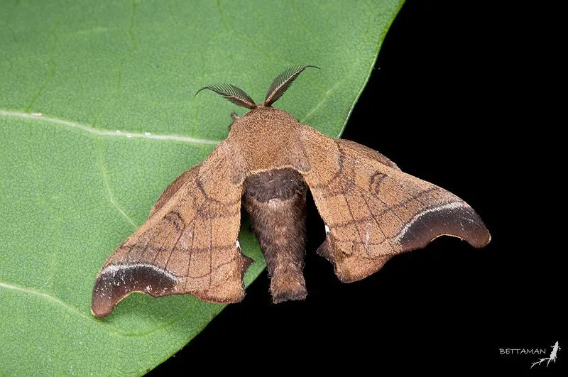

昆虫 · 动物界
野蚕 Bombyx mandarina

家蚕的野生近亲，体色灰褐，幼虫取食桑叶，茧形较小，分布在东亚的桑林和灌丛中，是研究家蚕起源的重要物种。
- 分类
- 门节肢动物门纲昆虫纲目鳞翅目科蚕蛾科属蚕蛾属
- 栖息环境
- 桑林、灌丛和阔叶林边缘，幼虫在桑叶上取食
- 地理分布
- 中国、日本、朝鲜半岛和俄罗斯远东
- 保护级别
- IUCN 暂无评估；中国未列入国家重点保护名录
物种志
野蚕成虫体长 1.5–2 cm，翅展 3–4 cm，体色灰褐，前翅有深色横纹和斑块，后翅颜色较浅；触角羽状，雄蛾触角更发达。幼虫体色灰褐或黄褐，体表有斑纹和细毛，取食桑叶，老熟后结出纺锤形的小茧。
野蚕分布于中国、日本、朝鲜半岛和俄罗斯远东，栖息于桑林、灌丛和阔叶林边缘，一年发生多代，以蛹在茧中越冬。它是家蚕的野生近亲，二者可以杂交，研究表明家蚕由野蚕驯化而来，因此野蚕在蚕业遗传育种和进化研究中具有重要价值。野蚕幼虫取食桑叶，数量多时会对桑园造成一定影响；它也是鸟类和寄生蜂的宿主。野蚕的茧比家蚕茧小，颜色多为灰褐或淡黄，目前尚无保护评估。
形态与习性
- 食性幼虫取食桑叶，成虫口器退化不取食
- 翅展3–4 cm
- 识别体色灰褐，前翅有深色横纹和斑块
- 生活史一年发生多代，以蛹在茧中越冬
- 价值家蚕的野生近亲，可用于遗传育种研究
- 习性幼虫老熟后结纺锤形小茧化蛹
趣味知识
- 野蚕是家蚕的野生祖先，两者可以杂交并产生可育后代。
- 它的茧比家蚕茧小得多，颜色偏灰褐或淡黄。
- 野蚕蛾的口器已经退化，成虫阶段基本不吃东西，只负责繁殖。